불필요한 설명은 덜어내고, 제품과 포장 정보를 명확하게 전달합니다.
PRODUCT PROFILE · 2026제품을 고르는 기준을
제품을 고르는 기준을
더 선명하게.
보호자에게는 이해하기 쉬운 간식, 파트너에게는 오래 판매할 수 있는 제품 구조를 제안합니다.
8제품 라인
5제품 카테고리
30g–1kg포장 스펙트럼
—제품군 누적 리뷰
제품의 목적은
더 분명하게.
ZERO LABS는 제품을 많이 보여 주는 대신, 왜 필요한지와 어떻게 선택하는지를 쉽게 설명합니다.
육류·채소·과일·식물성·시리얼 등 다양한 선택지를 목적별로 구성합니다.
보호자와 판매자가 반복해서 이해하고 운영할 수 있는 공급 구조를 지향합니다.
8개 제품군,
—건의 리뷰 기록
제품별 특징과 함께 판매채널 화면에 누적된 공개 리뷰 게시물 수를 비교해 포트폴리오의 시장 반응을 한눈에 확인할 수 있습니다.
—8개 제품군 누적 리뷰 게시물
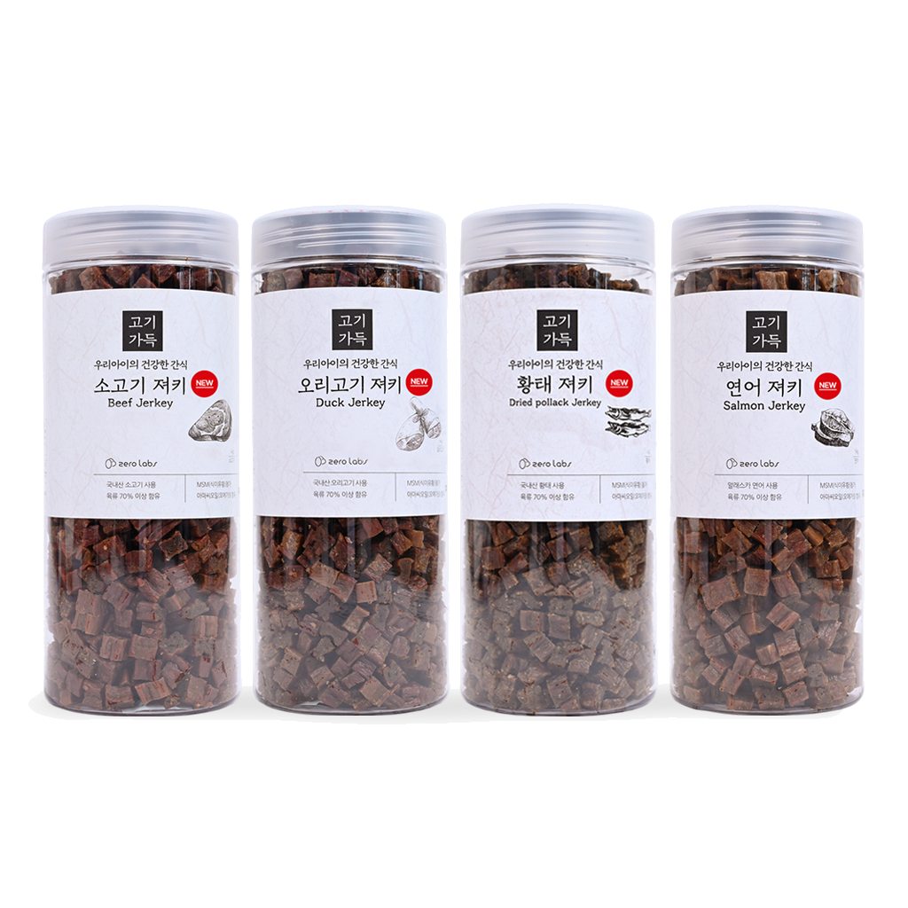
고기가득
육류 원료 콘셉트의 부드러운 져키 라인
1kg / 350g · 4종제품군 누적 리뷰 —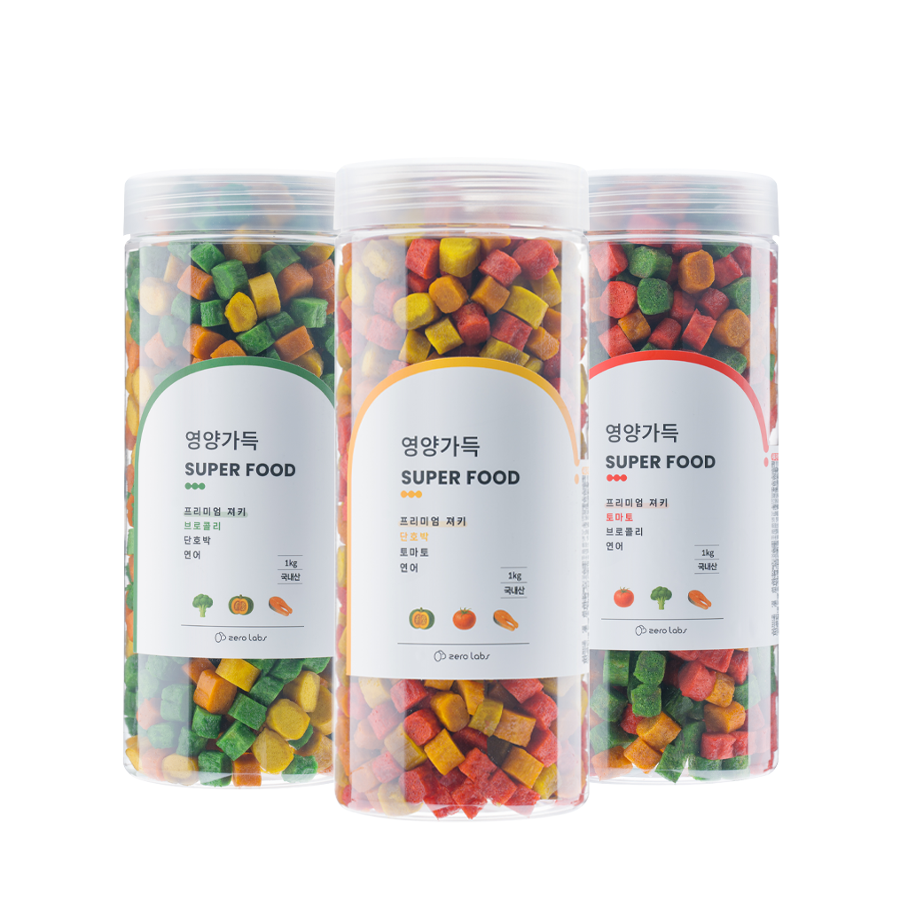
영양가득
채소와 연어 콘셉트를 담은 컬러 져키
1kg / 350g · 3종제품군 누적 리뷰 —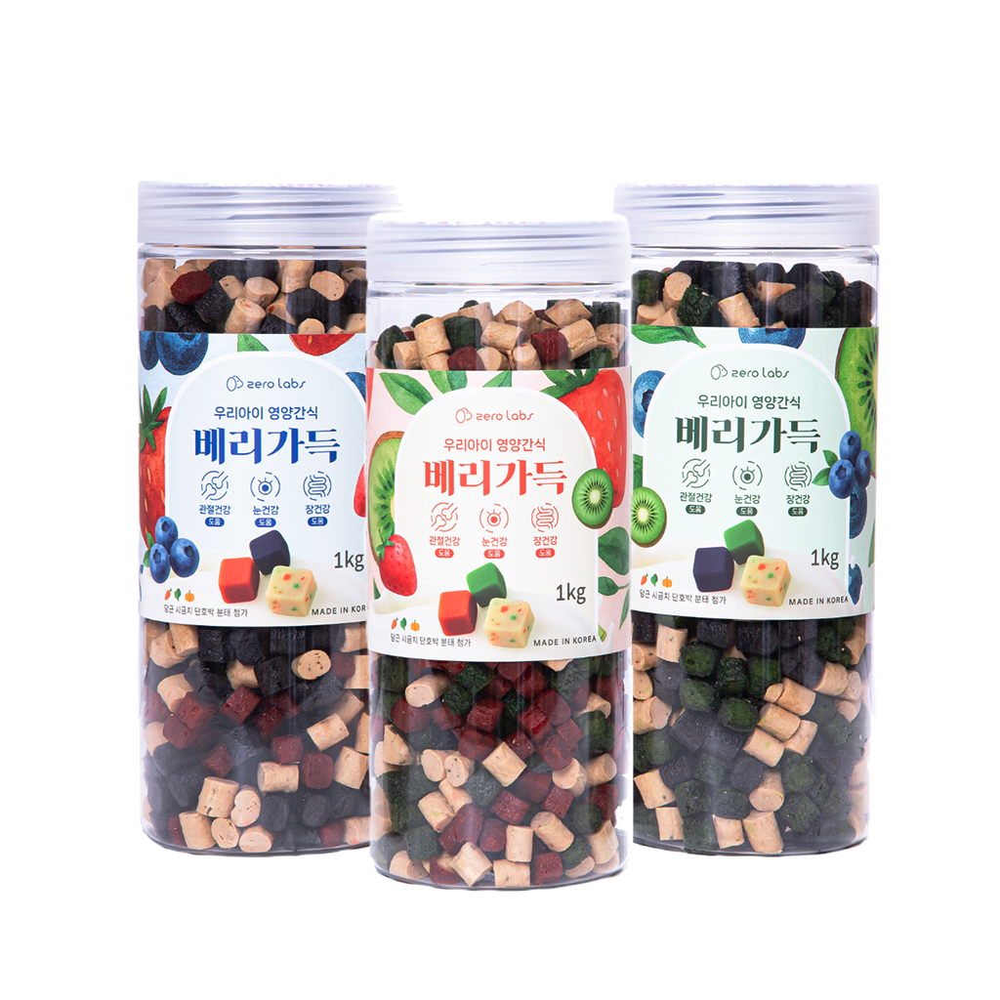
베리가득
과일과 요거트 콘셉트의 산뜻한 져키
1kg / 400g · 3종제품군 누적 리뷰 —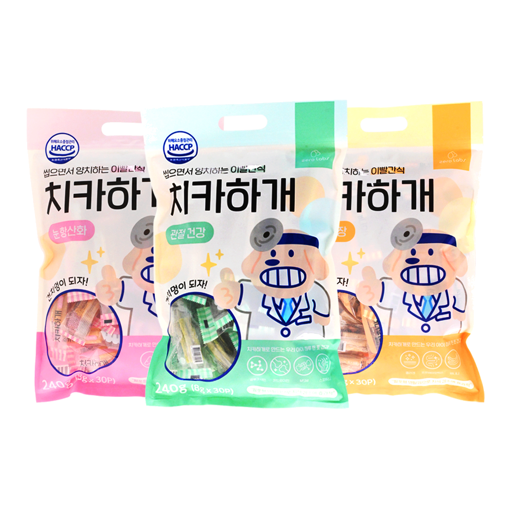
치카하개
세 가지 테마로 구성한 씹는 간식
240g · 3종제품군 누적 리뷰 —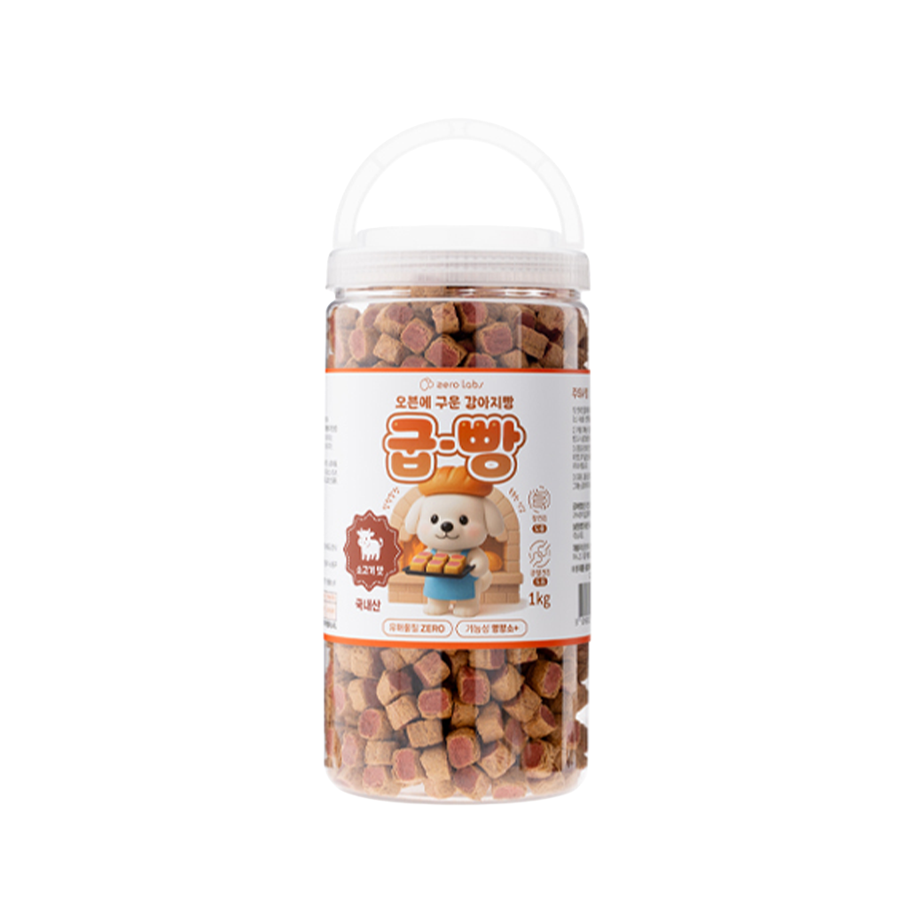
굽빵
오븐 베이크드 콘셉트의 빵 모양 간식
1kg / 200g · 1종제품군 누적 리뷰 —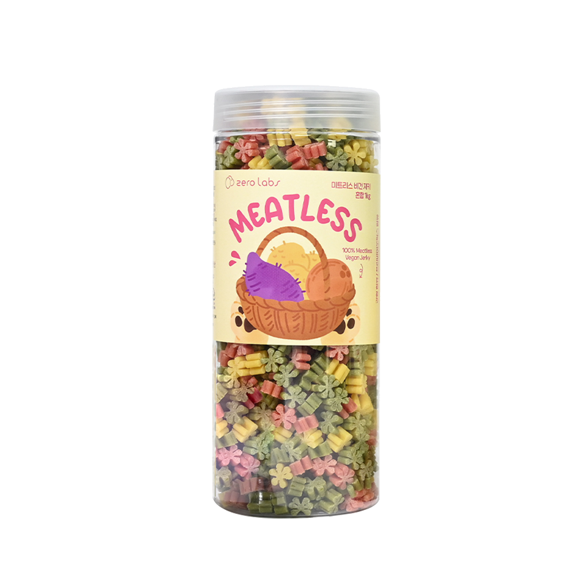
미트리스
식물성 콘셉트로 확장한 부드러운 져키
1kg · 1종제품군 누적 리뷰 —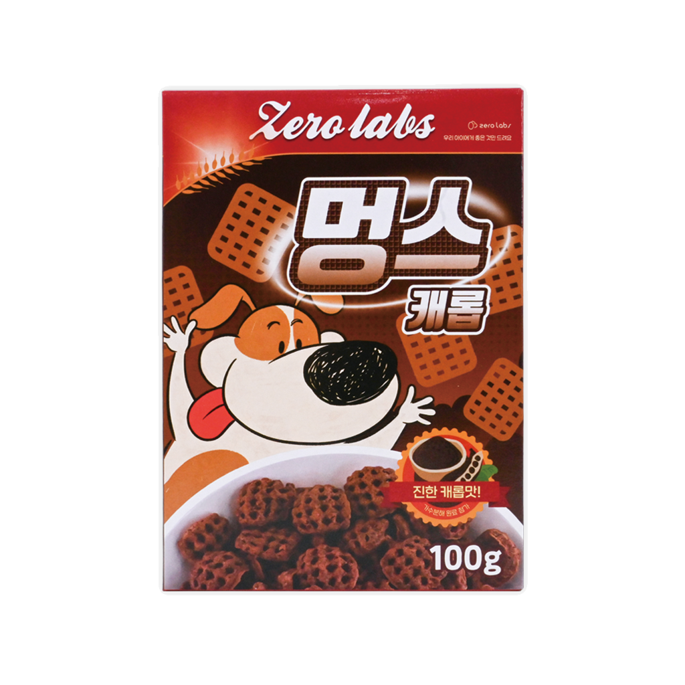
멍스
캐롭 콘셉트의 컬러풀한 시리얼 간식
100g · 1종제품군 누적 리뷰 —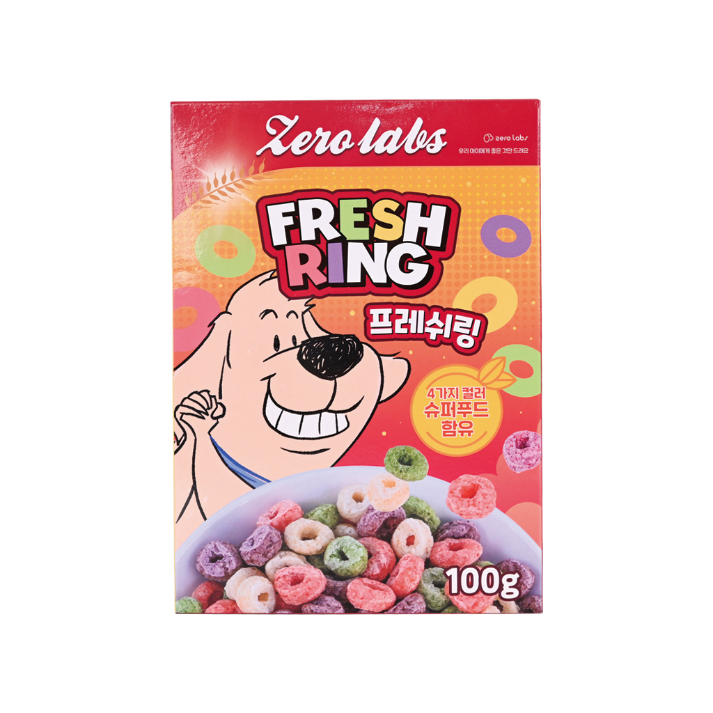
프레쉬링
네 가지 색상의 링 형태 시리얼 간식
100g · 1종제품군 누적 리뷰 —리뷰 집계 기준을 불러오는 중입니다.
03 / 1603 — JERKY · 01
고기가득
육류 원료 콘셉트를 담은 져키 라인으로, 소고기·연어·황태·오리고기 4종을 구성했습니다.
MARKET RESPONSE제품군 누적 리뷰 —기준일 —
LINEUP4종
PACK1kg · 350g
FORMAT져키 타입
USE간식 · 보상용
04 — JERKY · 02
영양가득
채소와 연어 콘셉트를 조합한 컬러 져키 라인으로, 토마토·단호박·브로콜리 3종을 구성했습니다.
MARKET RESPONSE제품군 누적 리뷰 —기준일 —
LINEUP3종
PACK1kg · 350g
FORMAT져키 타입
USE간식 · 보상용
05 — JERKY · 03
베리가득
딸기·키위·블루베리와 요거트 콘셉트를 담은 과일 져키 라인입니다.
MARKET RESPONSE제품군 누적 리뷰 —기준일 —
LINEUP3종
PACK1kg · 400g
FORMAT져키 타입
USE가벼운 간식 제안
06 — DENTAL
치카하개
씹는 시간을 중심으로 관절·눈·피부·장 테마를 나눈 덴탈 간식 라인입니다.
MARKET RESPONSE제품군 누적 리뷰 —기준일 —
LINEUP3종
PACK240g · 8g × 30개
FORMAT개별 포장
NOTE표시사항 기준 문구
07 — BAKED
굽빵
오븐에 구운 빵 모양 간식으로, 소고기맛 1kg와 200g 포장을 제안합니다.
MARKET RESPONSE제품군 누적 리뷰 —기준일 —
LINEUP1종
PACK1kg · 200g
FORMAT베이크드 타입
USE주력 · 체험
08 — PLANT-BASED
미트리스
식물성 콘셉트로 구성한 부드러운 져키 타입 제품으로, 포트폴리오의 선택 폭을 넓힙니다.
MARKET RESPONSE제품군 누적 리뷰 —기준일 —
LINEUP1종
PACK1kg
FORMAT져키 타입
ROLE카테고리 확장
09 — CEREAL · 01
멍스
캐롭 콘셉트와 컬러감 있는 모양으로 차별화한 시리얼 타입 반려견 간식입니다.
MARKET RESPONSE제품군 누적 리뷰 —기준일 —
LINEUP1종
PACK100g
FORMAT시리얼 타입
ROLE가벼운 추가 제안
10 — CEREAL · 02
프레쉬링
네 가지 색상의 링 형태로 구성한 시리얼 타입 제품으로, 진열에 리듬을 더합니다.
MARKET RESPONSE제품군 누적 리뷰 —기준일 —
LINEUP1종
PACK100g
FORMAT링 타입
ROLE컬러 포인트
제품은 포장 단위까지
하나의 언어로 움직입니다.
대용량 주력 SKU와 중간용량·체험팩을 함께 배치해 진입부터 반복 구매까지 이어지는 구조를 만듭니다.
라인주력중간체험
져키 3종1kg350g / 400g30g
굽빵1kg200g30g
치카하개240g——
바이어가 비교할 수 있어야
판매가 시작됩니다.
제품별 차이를 한 표에 담아 매장 상담과 온라인 상품 등록에 바로 활용할 수 있도록 구성합니다.
제품군카테고리중량구성
고기가득Jerky1kg / 350g4종
영양가득Jerky1kg / 350g3종
베리가득Jerky1kg / 400g3종
치카하개Dental240g3종
굽빵Baked1kg / 200g1종
미트리스·멍스·프레쉬링Plant / Cereal1kg / 100g각 1종
제품 설명이
판매 설명이 되도록.
매장과 온라인 셀러가 같은 정보를 반복해서 사용할 수 있도록, 제품명·카테고리·포장·상황을 고정된 순서로 제공합니다.
매장용
카테고리 카드, 포장 단위, 대표 SKU를 빠르게 비교하고 진열 순서를 제안합니다.
온라인용
제품명·중량·구성·주의 문구를 상품 상세페이지에 옮기기 쉬운 구조로 정리합니다.
작게 경험하고,
오래 거래하는 구조
체험팩은 첫 선택을 낮추고, 주력 포장은 반복 판매를 만듭니다. 주요 져키와 굽빵을 30g으로 먼저 경험할 수 있습니다.
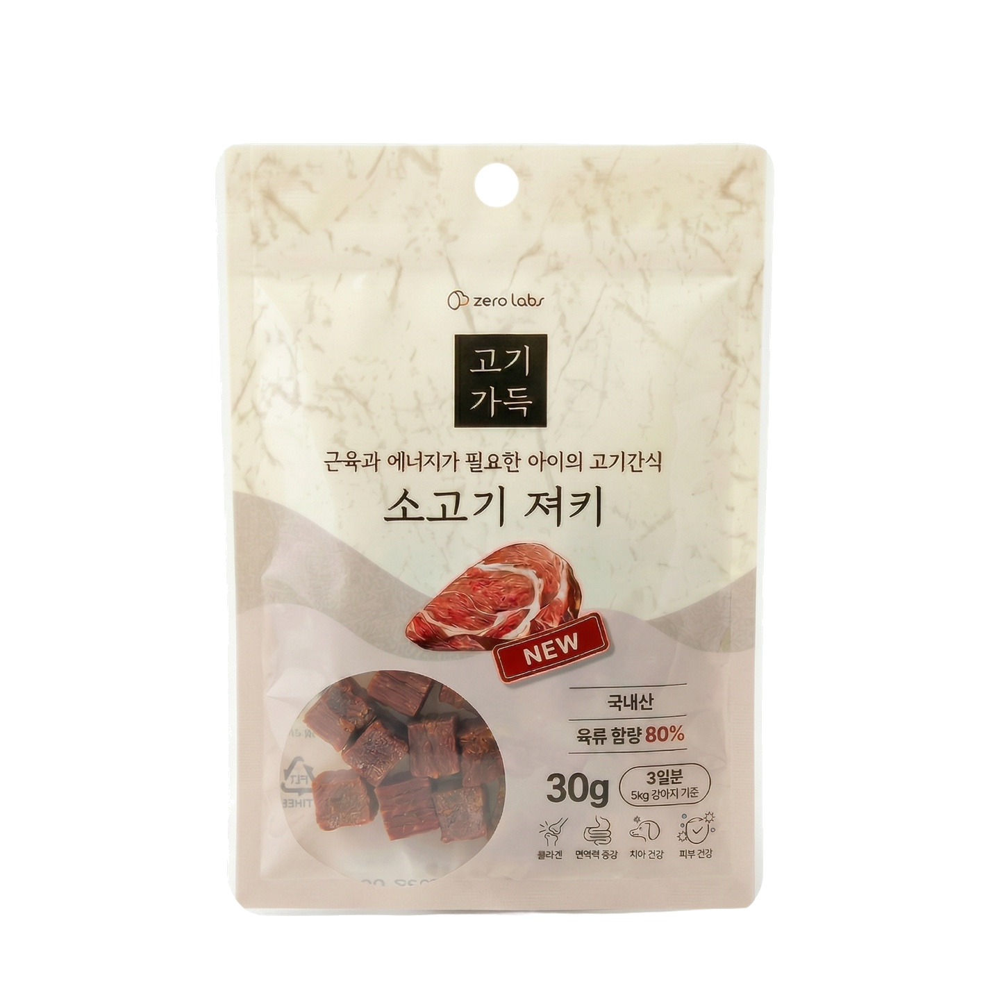
고기가득30g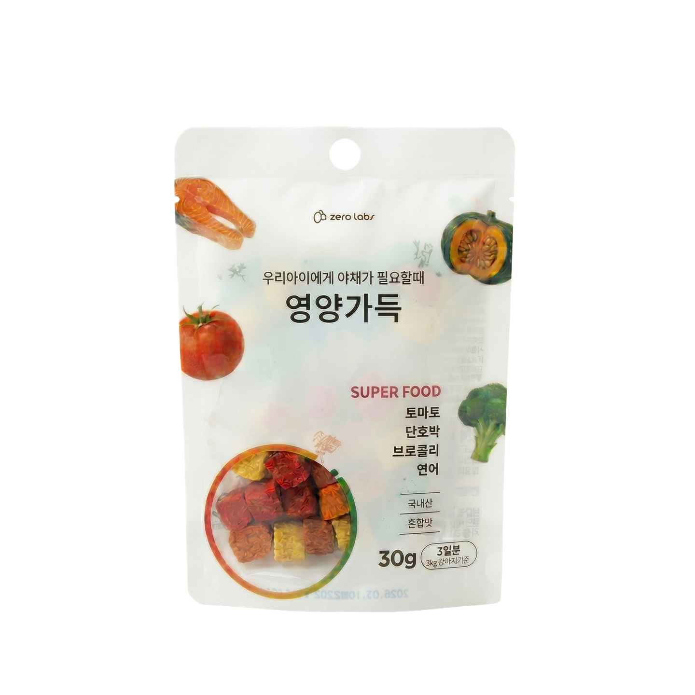
영양가득30g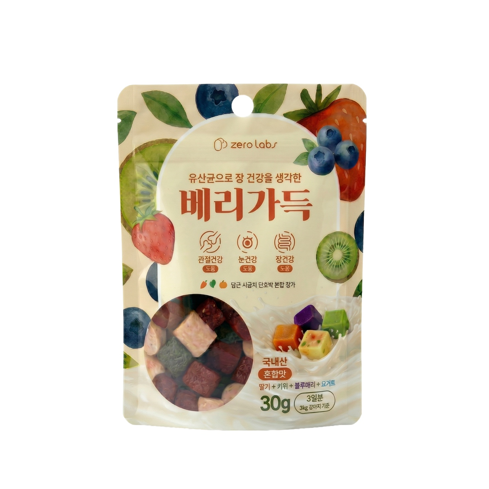
베리가득30g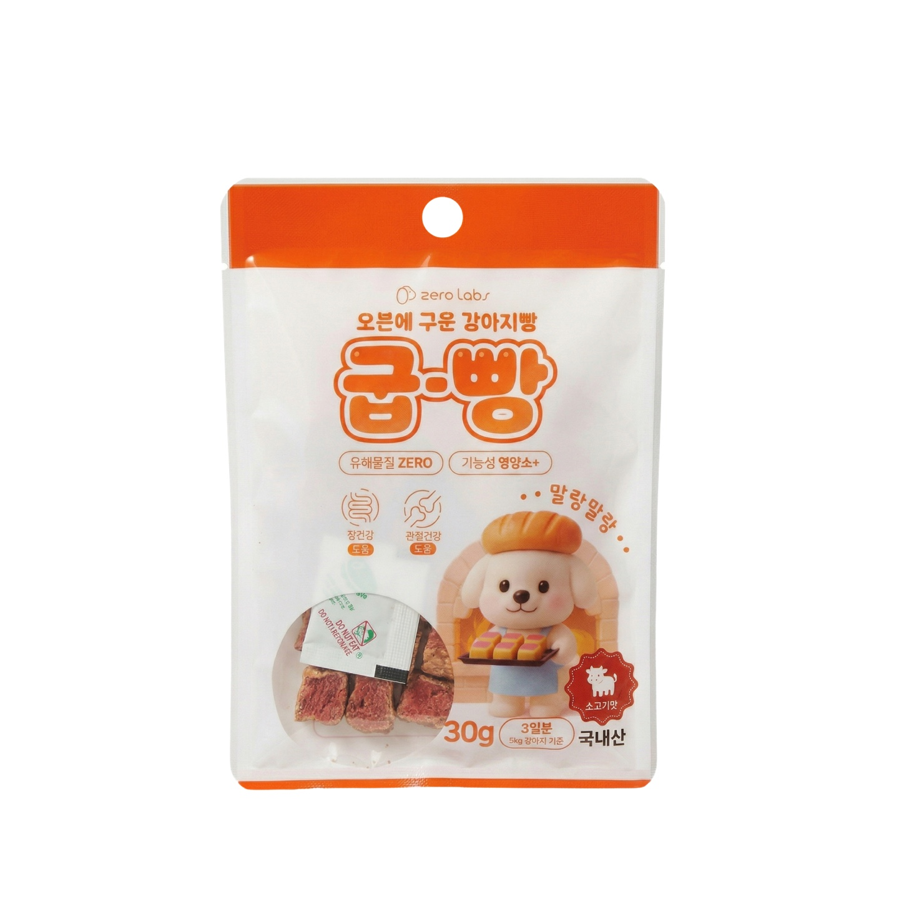
굽빵30gB2B 상담
제품 사양과 거래 조건은 공식 문의 채널에서 최신 정보를 확인합니다.
15 — CONTACTZERO LABS와
ZERO LABS와
제품을 시작하세요.
제품 문의와 B2B 거래 상담은 공식 채널로 연락해 주세요.